Publications
Archival International Journals:
-
Modeling and characterization of a carbon fiber emitter for electrospray ionization, Sen A. K., J. Darabi, D. R. Knapp, J. Liu, J. Micromechanics and Microengineering (Institute of Physics Publishing, JIF: 1.731), vol. 16, pp. 620-630, 2006.
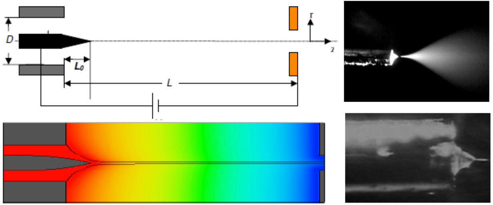 -
Modeling and parametric study of a novel multi-spray emitter for ESI-MS applications, Sen A. K., J. Darabi, D. R. Knapp, Microfluidics and Nanofluidics (Springer, JIF: 2.528), vol. 3, no. 3, pp. 283-298, 2007.
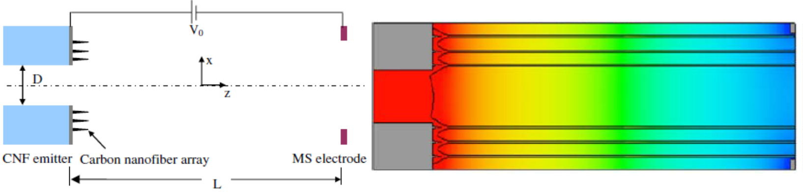 -
Droplet ejection performance of a monolithic thermal inkjet print head, Sen A. K., J. Darabi, J. Micromechanics and Microengineering (Institute of Physics Publishing, JIF: 1.731),vol. 17, pp. 1-8, 2007.
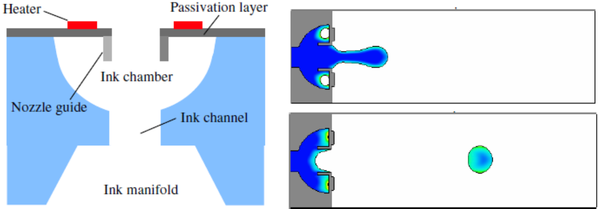 -
Modeling and Optimization of a Microscale Capacitive Humidity Sensor for HVAC Applications, Sen A. K., J. Darabi, IEEE Sensors Journal (IEEE, JIF: 1.852), vol. 8, no. 4, pp. 333-340, 2008.
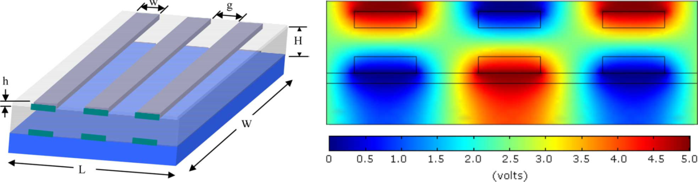 -
Use of nanoporous alumina surface for desorption electrospray ionization mass spectrometry in proteomic analysis, Sen A. K., R. Nayak, J. Darabi, D. R. Knapp, Biomed. Microdevices (Springer, JIF: 2.877), vol. 10, no. 5, pp. 531-538, 2008.
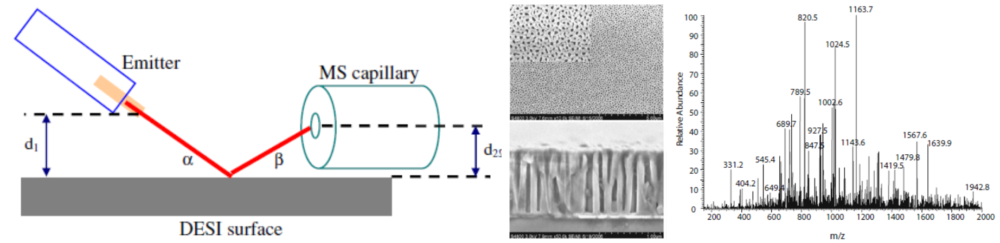 -
Dual DESI-LDI mass spectrometry on a common nanoporous alumina platform for enhanced shotgun proteomic analysis, Nayak R., A. K. Sen, J. Liu, D. R. Knapp, J. Analytical Chemistry (American Chemical Society, JIF: 5.636), vol. 80, no. 22, pp. 8840–8844, 2008.
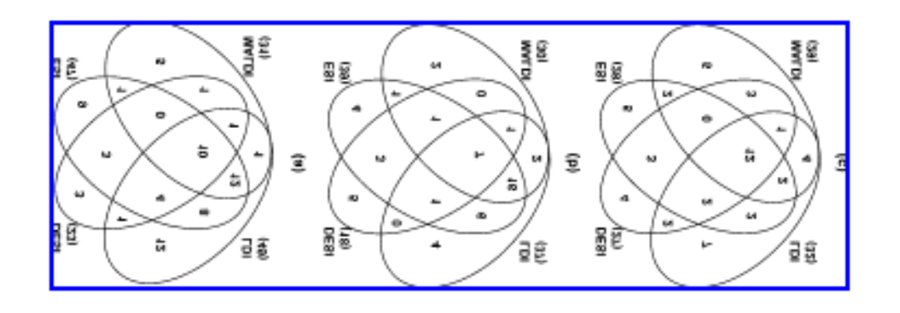 -
Design, fabrication and test of a microfluidic nebulizer chip for desorption electrospray ionization mass spectrometry, Sen A.K., J. Darabi, D.R. Knapp, Sensors and Actuators B: Chemical (Elsevier Science, JIF: 4.286),vol. 137, pp. 789-796, 2009.
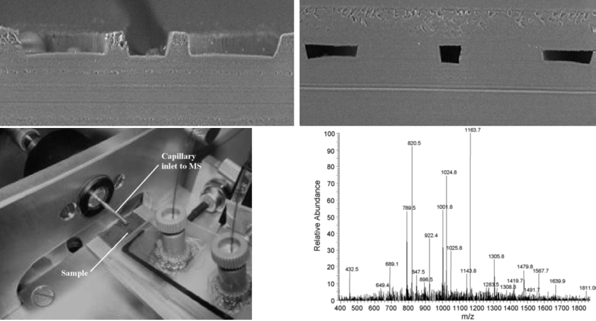 -
A fluidic interconnection system for polymer-based microfluidic devices, Sen A. K., J. Darabi, D. R. Knapp, Microsystems Technologies (Springer, JIF: 0.931), vol. 16, no. 4, 2010.
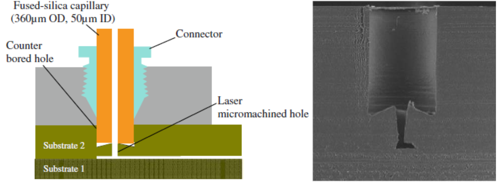 -
Liquid filtration and particle concentration using a cross-flow filter for microfluidics applications, Sen A. K., M Mowlem, H Morgan, Microsystems Technologies (Springer, JIF: 0.931), vol. 17, no. 8, pp. 1407-1412, 2011.
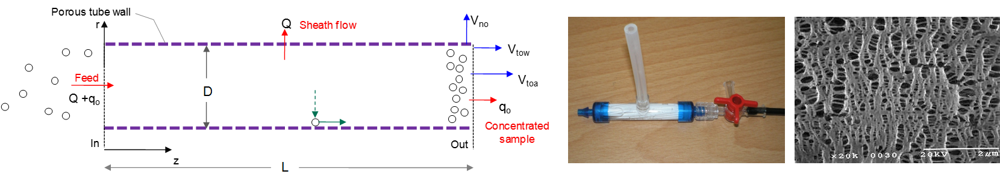 -
Analysis of droplet generation in electrospray using a carbon fiber based microfluidic emitter,Sen A. K., J. Darabi, D. R. Knapp, J Fluids Engineering (ASME, JIF: 1.121), vol. 133, pp. 071301 1-8, 2011.
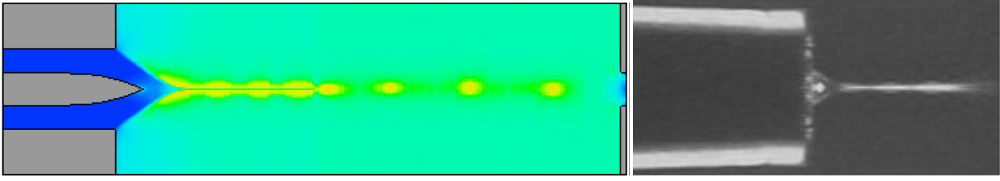 -
Aerosol formation in electrospray ionization using a microfluidic emitter, Sen A. K., J. Darabi, D. R. Knapp, IEEE Sensors Journal (IEEE, JIF: 1.852), vol. 11, no. 10, pp. 2335-2341, 2011.
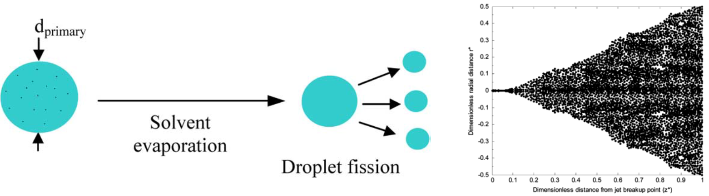 -
A microsystem for extraction, capture and detection of E-Coli O157:H7, Sen A. K., T. Harvey, Jan Clausen, T. Cox, Biomedical Microdevices (Springer, JIF: 2.877), vol. 13, pp. 705-715, 2011.
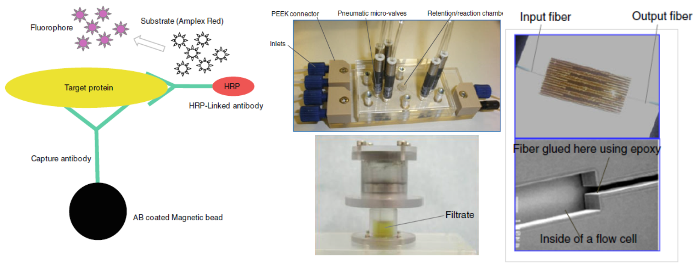 -
Liquid filtration and particle concentration using a cross-flow filter for microfluidics applications, Sen A. K., M Mowlem, H Morgan, Microsystems Technologies (Springer, JIF: 0.931), vol. 17, no. 8, pp. 1407-1412, 2011.
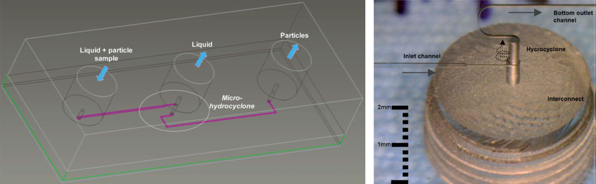 -
Microfluidic device based on a microhydrocyclone for particle liquid separation, P Bhardwaj, P Bagdi and A K Sen, Lab on Chip (Royal Society of Chemistry, JIF: 6.115), vol. 11, pp. 4012-4021, 2011.
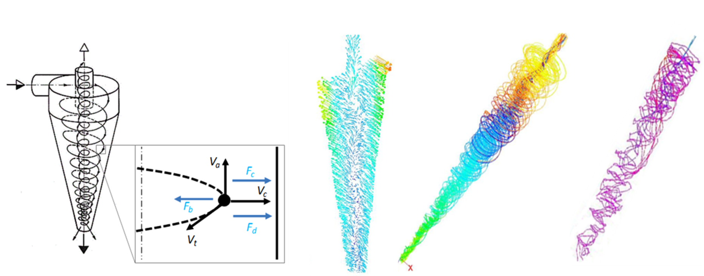 -
Analysis and simulation of a micro hydrocyclone device for particle liquid separation, P Bagdi, A Sharma, P Bhardwaj, and A K Sen, J Fluids Engineering (ASME, JIF: 1.121), Vol. 134, pp. 021105-9, 2012.
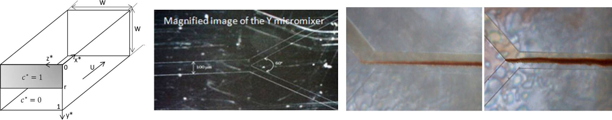 -
Analytical, numerical and experimental investigations of mixing of fluids in microchannel, P Sahu, A Golia, and A K Sen, Microsystems Technologies (Springer, JIF: 0.931), Vol. 18, pp. 823-832, 2012.
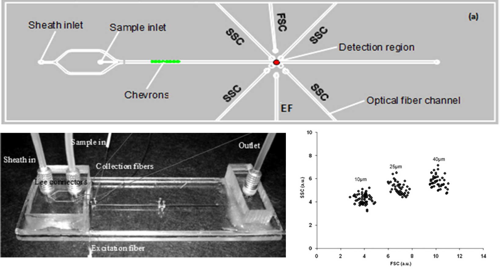 -
Electro-kinetic assisted mixing in a microchannel with lateral electrodes, P Kemprai, A. K. Sen, Micro and Nanosystems (Bentham Science, JIF:) vol. 4 (4), pp. 304-313, 2012.
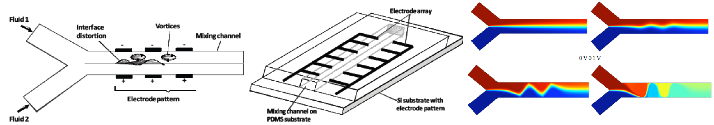 -
Investigations into mixing of fluids in microchannels with lateral obstructions, P Sahu, A Golia and A K Sen, Microsystems Technologies (Springer, JIF: 0.931), vol. 19 (4), pp. 493-501, 2013.
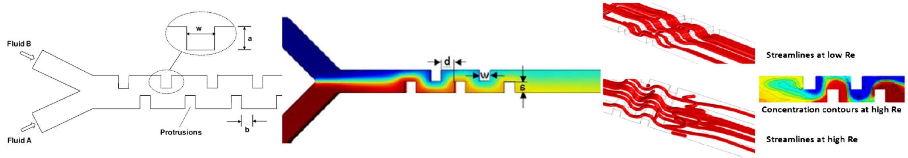 -
Theoretical and numerical investigations of an electroosmotic flow micropump with interdigitated electrodes, U Barman, P Baruah, A K Sen, S C Mishra, Microsystems Technologies (Springer, JIF: 0.931), vol. 20, pp.157-168,2013.
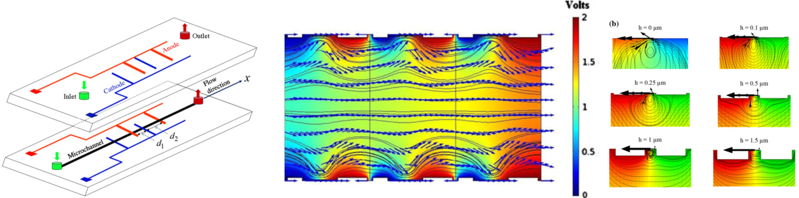 -
Isotachophoresis with emulsions, G. Goet, T. Baier, S. Hardt, A. K. Sen, Biomicrofluidics (Americal Institute of Physics, JIF: 3.357), vol. 7 (4), pp. 044103-044116, 2013.
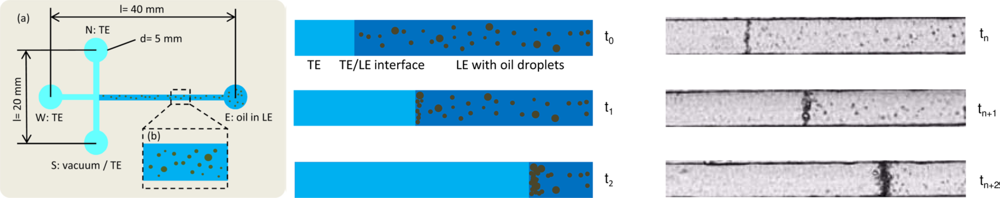 -
Electrokinetic transport and separation of droplets in a microchannel, A. K. Sen, P. Sajeesh, Microfluidics Nanofluidics (Springer, JIF: 2.528), vol. 17, pp. 97-106, DOI 10.1007/s10404-013-1292-8, 2014
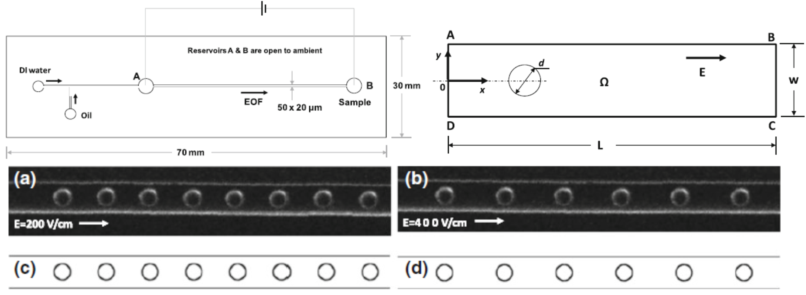 -
Particle separation and sorting in microfluidic devices: A Review, P. Sajeesh, A. K. Sen, Microfluidics Nanofluidics (Springer, JIF: 2.528),vol. 17, pp. 1-52, 2014
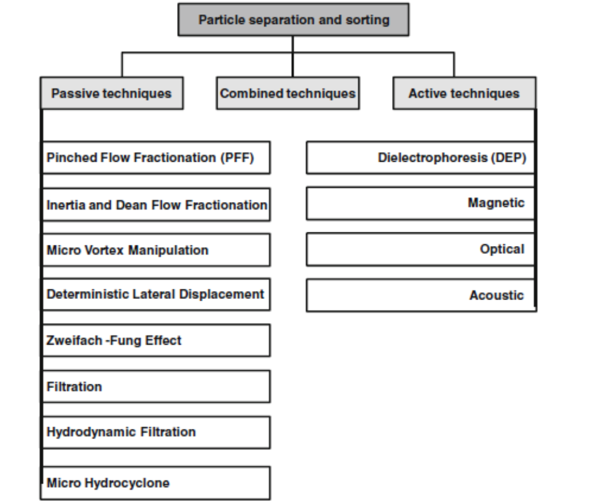 -
Flow and Heat Transfer Analysis of an Electro-Osmotic Flow Micropump for Chip Cooling, K. Pramod; A. K. Sen, J. Electron. Packag. (ASME, JIF: 0.842), vol. 136, pp. 031012-031012-14, 2014.
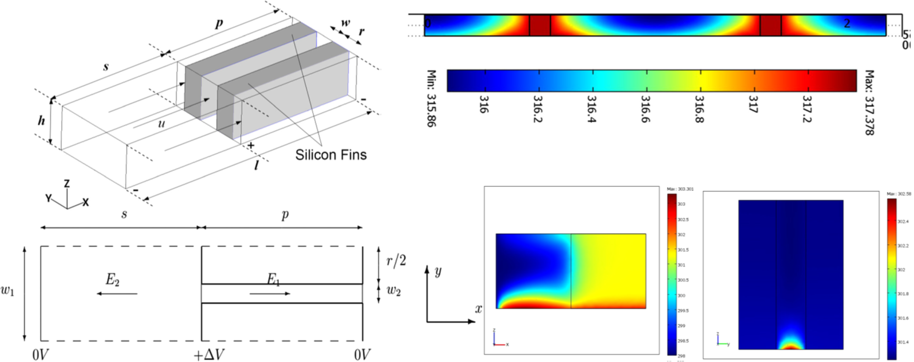 -
Hydrodynamic resistance and mobility of deformable objects in microfluidic channels, P. Sajeesh, A. K. Sen, Biomicrofluidics (Americal Institute of Physics, JIF: 3.357), vol. 8, pp.0541121-23, 2,2014.
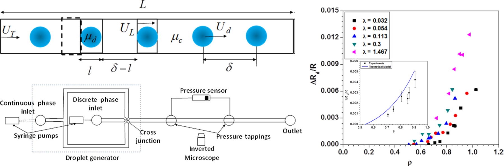 -
Alternating and merged droplets in a double T-junction microchannel, P. N. S. Harish, P. Sajeesh, U. Banerjee, S. Chander, A. K. Sen, BioChip (Springer, JIF: 1.09), pp. 1-11, 2015.
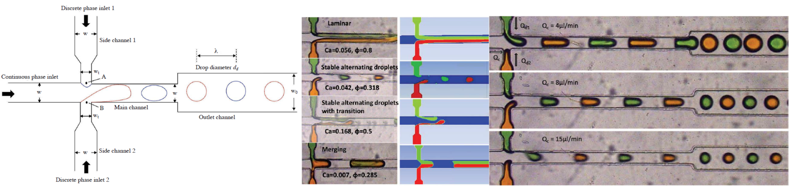 -
Analytical modeling, simulations and experimental studies of a PZT actuated planar valveless PDMS micropump, S. Singh, N. Kumar, D. George, A. K. Sen, Sensors & Actuators A: Physical (Elsevier Science, JIF: 2.052),225, 81-94, 2015.
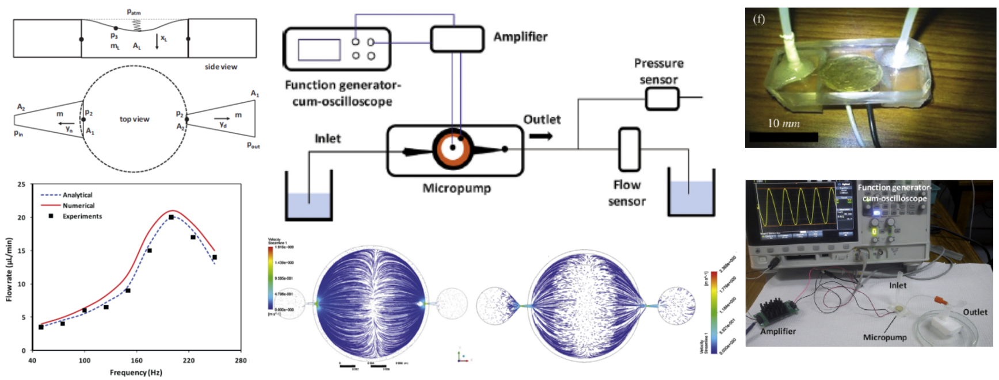 -
Experimental and numerical studies of a microfluidic device with compliant chambers for flow stabilization, V. Iyer, A. Raj, R. K. Annabatula, A. K. Sen, J Micromechanics and Microengineering (Institute of Physics Publishing, JIF: 1.731), 25, 075003,2015.
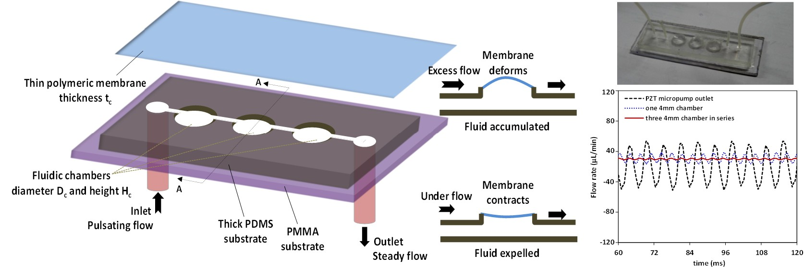 -
Microfluidic device with focusing and spacing control for resistance based sorting of droplets and cells, P. Sajeesh, S. Manasi, M. Doble, A. K. Sen, Lab on Chip, (Royal Society of Chemistry, JIF: 6.115),15, 3738-3748, 2015.
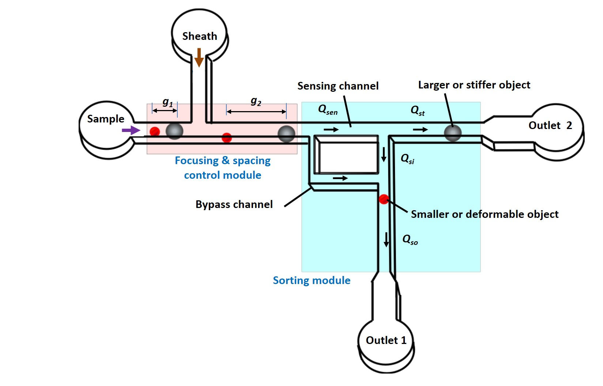 -
Capillary flow enhancement in rectangular polymer microchannels with a deformable wall, R. Anoop, A. K. Sen, Physical Review E (American Physical Society, JIF: 2.288), 92, 013024, 2015.
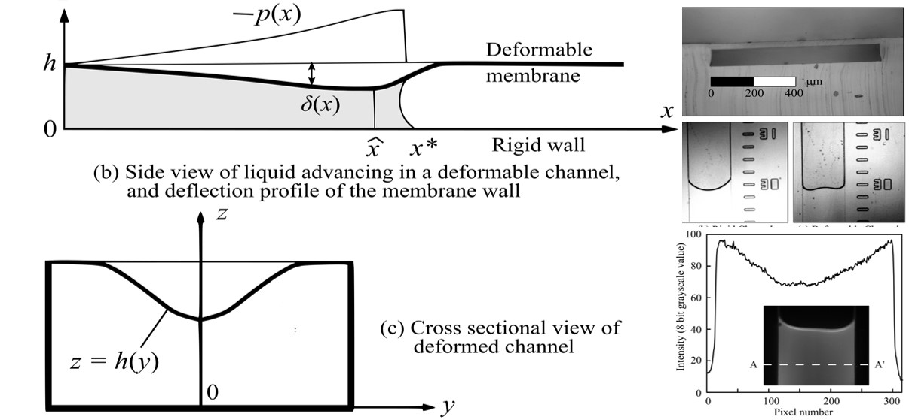 -
Development of a microfluidic device for cell concentration and blood cell-plasma separation, M. S. Maria, T. S. Chandra, A. K. Sen, Biomedical Microdevices (Springer, JIF: 2.925), 17(6), 2015.
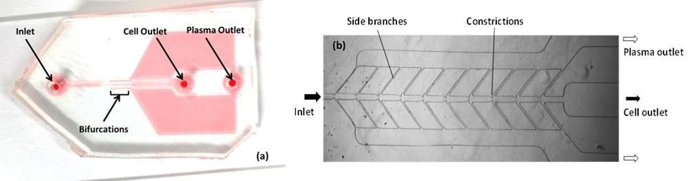 -
Elastocapillary powered manipulation of liquid plug in microchannels, D. George, R. Anoop, A. K. Sen, Appl. Phys. Letters (Americal Institute of Physics, JIF: 3.357), 108 (1), 2015.
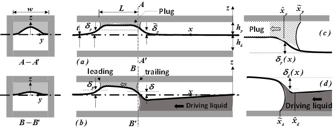 -
Single step fabrication and characterization of PDMS micro lens and its use in optocapillary flow manipulation, S. Damodara, D. George, A. K. Sen, Sensors & Actuators B: Chemical (Elsevier Science, JIF: 4.286), 2015.
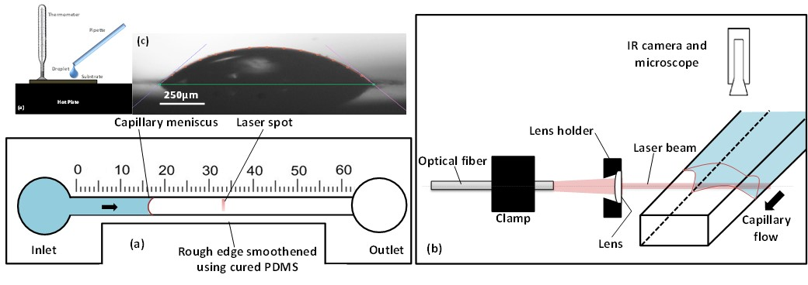 -
Flow induced deformation of compliant microchannels and its effect on pressure-flow characteristics, A. Raj, A. K. Sen, Microfluidics and Nanofluidics (Springer, JIF: 2.528), 2015.
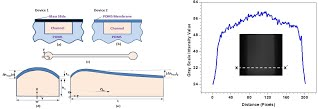 -
Dynamics of aqueous droplets at the interface of co-flowing immiscible oils in a microchannel, K. S. Jayaprakash, U. Banerjee, A. K. Sen, Langmuir (accepted), 2015.

Peer- Reviewed International Conference Papers:
- A. K. Sen, P. Sajeesh, M. Doble, Focusing, specing control and resistance based sorting of deformable objects, 19th International Conference on Miniaturized Systems for Chemistry and Life Sciences (MicroTAS 2015), 25-29.10.2015, Gyeongju, Korea
- A. K. Sen, A. Rajappan, Elastocapillay flow in deformable PDMS microchannels, 19th International Conference on Miniaturized Systems for Chemistry and Life Sciences (MicroTAS 2015), 25-29.10.2015, Gyeongju, Korea
- P. K. Shivhare, A. Bhadra, P. Sajeesh, A. Prabhakar, A. K. Sen, Hydrodynamic focusing of particle laden flow for micro flow cytometry, 42nd National conference on fluid mechanics and fluid power (FMFP), December 14-16, 2015), NIT Surathkal.
- M.S. Maria, T.S. Chandra and A.K. Sen, A Microfluidic device for cell concentration and blood cell- plasma seperation, 42nd National conference on fluid mechanics and fluid power (FMFP), December 14-16, 2015), NIT Surathkal.
- A. K. Sen, P. Sajeesh, M. Doble, Hydrodynamic interactions of deformable objects in microfluidic channels, Proceedings of the 4th European Conference on Microfluidics - Microfluidics 2014 - Limerick, December 10-12, 2014
- P. Sajeesh, A. K. Sen, Hydrodynamic resistance of droplets in a micro channel flows, 12th International Conference on Nanochannels, Micro channels, and Minichannels (ICNMM2014), Chicago, IL, Aug 3-7, 2014. P. Sajeesh, A. K. Sen, Sorting of droplets in a microchannel, International Conference on MEMS and Sensors (ICMEMSS 2014), December 2014, IIT Madras.
- M.S. Maria,T.S. Chandra and A.K. Sen, Microfluidic device for blood plasma separation, International Conference on MEMS and Sensors (ICMEMSS 2014), December 2014, IIT Madras.
- A. Raj, V.S.D Dhanush and A.K. Sen, A study of pressure driven flow through flexible PDMS microchannels, International Conference on MEMS and Sensors (ICMEMSS 2014), December 2014, IIT Madras.
- N. Kumar and A.K Sen, Development of a solenoid actuated planar valveless PDMS micropump, International Conference on MEMS and Sensors (ICMEMSS 2014), December 2014, IIT Madras.
- B. S. Kumar and A. K. Sen, Microfluidic Device for Separation of Liquid and Particles, 9th International Conference on Intelligent Unmanned Systems ((ICIUS 2013), 25-27 September 2013, Jaipur, Rajasthan, India.
- D. George, M. Singaperumal and A. K. Sen, Three-dimensional electro-fluid-structural simulation for design of valve-less micropump, 9th International Conference on Intelligent Unmanned Systems (ICIUS 2013), 25-27 September 2013, Jaipur, Rajasthan, India.
- K. Pramod and A. K Sen, Thermal Management of Integrated Circuits using Cascade Electro-osmotic Micropump, 9th International Conference on Intelligent Unmanned Systems (ICIUS 2013), 25-27 September 2013, Jaipur, Rajasthan, India.
- U. Barman, S.C. Mishra, A. K. Sen, Design and simulation of low voltage cascade electroosmotic pump, 9th International Conference on Flow Dynamics, Sendai, Japan, 19 - 21 September 2012.
- Investigation of a micromixer with and without indentations along the mixing channel, A Golia, P Sahu, P Muthukumar and A K Sen, ASMEIMECE (MEMS) Conference 2011, Denver, November 11-15, 2011
- Microfluidic device for particle liquid separation, P Bhardwaj, A S Sharma, P Bagdi and A K Sen, ASMEIMECE (MEMS) Conference 2011, Denver, November 11-15, 2011
- Microsystem for on-chip flow cytometry, A Sen, M Mowlem, H Morgan, accepted, International Conference on Fiber Optics and Photonics, IIT Guwahati, India, December 11-15, 2010
- Microfluidic system for ESI (DESI) and MALDI (LDI) shotgun proteomic analysis, D.R. Knapp, J. Liu, R. Nayak, A.K. Sen, G. Chen, and D. Higbee, CECE 2008; 5th International Meeting on Bioanalysis, Brno, Czech, Republic, November 24-25, 2008
- Microfluidic platform for ESI (DESI) and MALDI (LDI) shotgun proteomic analysis, Knapp D.R., J. Liu, R. Nayak, A. K. Sen, D.J. Higbee, HUPO07, Seoul, Korea, October 6-10, 2007
- Investigation of jet breakup in electrospray ionization using a carbon fiber emitter, Sen A. K., J. Darabi, ASMEIMECE (MEMS) Conference 2007, Seattle, November 11-15, 2007
- Desorption electrospray ionization on nanoporus alumina surface, Sen, A. K., R. Nayak, J. Darabi, D. R. Knapp, Proceedings of Summer Bioengineering Conference, Denver, CO, June 21-25, 2007
- Microfluidic devices for ESI/MALDI and DESI/LDI shotgun proteomic analysis, Knapp D. R., J. Liu, R. Nayak, K. W. Ro, A. K. Sen, Presented at 2007 MicroScale Bioseparations (MSB) Conference, 2007
- Porous alumina surface as a dual ionization laser desorption ionization-desorption electrospray ionization platform for increased peptide coverage, Nayak R., A. K. Sen, J. Liu, D. R. Knapp, ASMS Conference 2007, Seattle
- Modeling of electrospray performance of a novel multi-jet emitter, Sen A. K., J. Darabi, D. R. Knapp, Technical Publication, ASME - IMECE (MEMS) Conference 2006, Chicago
- EHD modeling of a Novel carbon fiber emitter for electrospray ionization-mass spectrometry applications, Sen A. K., J. Darabi, D. R. Knapp, Proceedings of Summer Bioengg. Conference, Amelia Island, FL, June 2006.
Patents:
- Capillary-driven flow enhancement in polymer microchannels having flexible wall(s), A. K. Sen, Anoop R., App. No. 944/CHE/2015
- Multiple inlet-outlet valve-less micropump and micromixer, A. K. Sen, D. george, S. Singh, App. No. 4161/CHE/2013.
Books/Book Chapters:
- Numerical and Experimental Investigations of ESI and DESI Performance of Microfluidic Devices for Proteomic Analysis, Sen, A. K., ISBN: 978-054-942029-3, ProQuest Publisher, 2007.
- Book Chapter "Polymer Microfabrication" for the book titled "Micromachining", Sen, A.K., ISBN:978-953-307-906-6, INTECH Publisher